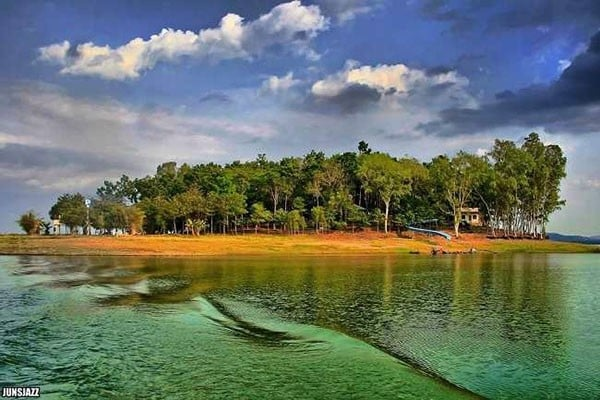
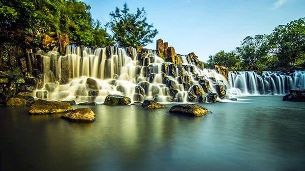

- -Vườn quốc gia (VQG) Nam Cát Tiên là khu dự trữ sinh quyển thế giới được UNESCO công nhận, nằm trên địa bàn 3 tỉnh Đồng Nai, Lâm Đồng và Bình Phước, cách TP.HCM khoảng 150-170km, nổi tiếng với rừng nhiệt đới ẩm, hệ động thực vật phong phú.

- -Hồ trị an & đảo ó: Hồ Trị An là hồ nước ngọt nhân tạo lớn tại Đồng Nai, cung cấp nước cho thủy điện và là điểm du lịch cắm trại, dã ngoại nổi tiếng cách TP.HCM khoảng 70km. Đảo Ó nằm trong lòng hồ Trị An, thuộc huyện Vĩnh Cửu, cách bến đò Đồng Trường khoảng 30 phút đi tàu/cano.

- -Thác Đá Hàn và Thác Giang Điền là hai điểm du lịch sinh thái nổi tiếng tại huyện Trảng Bom, tỉnh Đồng Nai, cách TP.HCM khoảng 50-70km. Thác Đá Hàn mang nét hoang sơ với 3 dòng thác (Chàng, Nàng, Đá Hàn), trong khi Thác Giang Điền quy mô lớn, dịch vụ tiện nghi hơn.

- -Vườn trái cây Long Khánh (Đồng Nai) là "thủ phủ" trái cây nổi tiếng gần TP.HCM, rộ nhất vào tháng 5-7 hàng năm với các loại chôm chôm, sầu riêng, măng cụt... Đặc trưng là trải nghiệm hái trái cây tại vườn, tham quan miệt vườn, ăn uống và các trò chơi dân gian. Các khu vực nổi tiếng bao gồm Bình Lộc, Xuân Lập, Bảo Quang.